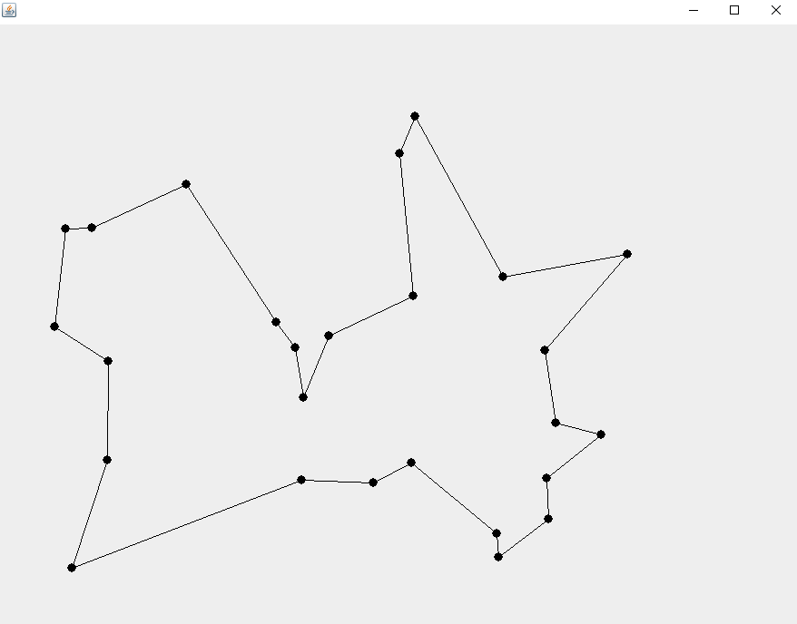
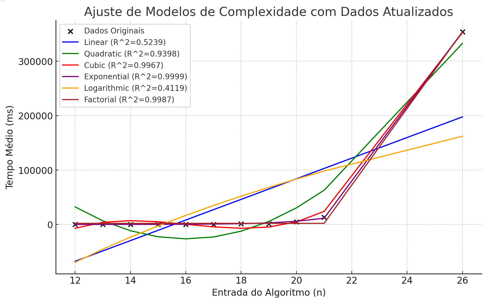

Diminuição do espaço de busca para o problema do caxeiro viajante
O problema
O problema do caxeiro viajante é conhecido por ser muito difícil de ser resolvido para instâncias médias, no sentido de complexidade de algoritmos, pois o problema por força bruta, demora um tempo super exponencial, ou O(n!) para ser resolvido, muitas heurísticas foram feitas para resolver o problema de forma aproximada que fosse mais rápida, algumas com complexidade O(n^2), porém todas elas tem um problema em comum: Quanto maior a instância, pior é a resposta do algoritmo. Entre elas podemos citar:
- Força bruta O(n!)
- Método guloso O(n^2)
- Inserção mais barata O(n^2)
Minha solução
Primeiramente, meu algoritmo recebe como entrada uma lista de cidades com cada um deles tendo uma coordenada (x,y), e então faz uma busca em profundidade no grafo. Porém ele faz uma série de cálculos para verificar se a próxima cidade é válida, se sim, ele vai para a próxima cidade, se não ele verifica todas as cidades disponíveis, se nenhuma delas for válida ele volta na recursividade da busca em profundidade.
Com isso eu consigo o melhor caminho em tempo exponencial O(2^n), bem melhor que o tempo super exponencial do algoritmo de força bruta O(n!).

Acima temos uma solução para 26 cidades, que demorou um total de 5,28613 minutos para ser calculado, tendo em vista a complexidade do algoritmo e que este é um tempo médio, para 27 cidades demoraria pouco mais ou menos 10,5 minutos.
A complexidade foi calculada usando uma técnica de aproximação de curva, utilizando esse código em Python:
# Dados atualizados
n_updated = np.array([12, 13, 14, 15, 16, 17, 18, 19, 20, 21, 26])
times_updated = np.array([17.5, 30, 45.9, 91.4, 192.8, 396.4, 918.3, 1141.7, 4488.7, 13052, 354091])
# Ajuste dos modelos com dados atualizados
params_linear_updated, _ = curve_fit(linear, n_updated, times_updated)
params_quadratic_updated, _ = curve_fit(quadratic, n_updated, times_updated)
params_cubic_updated, _ = curve_fit(cubic, n_updated, times_updated)
params_exponential_updated, _ = curve_fit(exponential, n_updated, times_updated)
params_logarithmic_updated, _ = curve_fit(logarithmic, n_updated, times_updated)
params_factorial_updated, _ = curve_fit(factorial_func, n_updated, times_updated)
# Previsões com dados atualizados
times_linear_updated = linear(n_updated, *params_linear_updated)
times_quadratic_updated = quadratic(n_updated, *params_quadratic_updated)
times_cubic_updated = cubic(n_updated, *params_cubic_updated)
times_exponential_updated = exponential(n_updated, *params_exponential_updated)
times_logarithmic_updated = logarithmic(n_updated, *params_logarithmic_updated)
times_factorial_updated = factorial_func(n_updated, *params_factorial_updated)
# Cálculo do R^2 com dados atualizados
r2_linear_updated = r2_score(times_updated, times_linear_updated)
r2_quadratic_updated = r2_score(times_updated, times_quadratic_updated)
r2_cubic_updated = r2_score(times_updated, times_cubic_updated)
r2_exponential_updated = r2_score(times_updated, times_exponential_updated)
r2_logarithmic_updated = r2_score(times_updated, times_logarithmic_updated)
r2_factorial_updated = r2_score(times_updated, times_factorial_updated)
# Plotando os dados e os ajustes com dados atualizados
plt.figure(figsize=(10, 6))
plt.scatter(n_updated, times_updated, color='black', label='Dados Originais')
plt.plot(n_updated, times_linear_updated, label=f'Linear (R^2={r2_linear_updated:.4f})', color='blue')
plt.plot(n_updated, times_quadratic_updated, label=f'Quadratic (R^2={r2_quadratic_updated:.4f})', color='green')
plt.plot(n_updated, times_cubic_updated, label=f'Cubic (R^2={r2_cubic_updated:.4f})', color='red')
plt.plot(n_updated, times_exponential_updated, label=f'Exponential (R^2={r2_exponential_updated:.4f})', color='purple')
plt.plot(n_updated, times_logarithmic_updated, label=f'Logarithmic (R^2={r2_logarithmic_updated:.4f})', color='orange')
plt.plot(n_updated, times_factorial_updated, label=f'Factorial (R^2={r2_factorial_updated:.4f})', color='brown')
plt.xlabel('Entrada do Algoritmo (n)')
plt.ylabel('Tempo Médio (ms)')
plt.title('Ajuste de Modelos de Complexidade com Dados Atualizados')
plt.legend()
plt.grid(True)
plt.show()
(r2_linear_updated, r2_quadratic_updated, r2_cubic_updated, r2_exponential_updated, r2_logarithmic_updated, r2_factorial_updated)
O resultado do código foi este gráfico:

Com isso podemos fazer a seguinte interpretação:
- Modelo Linear (O(n)): R2=0.5239
- Modelo Quadrático (O(n2)): R2=0.9398
- Modelo Cúbico (O(n3)): R2=0.9967
- Modelo Exponencial (O(2n)): R2=0.9999
- Modelo Logarítmico (O(logn)): R2=0.4119
- Modelo Fatorial (O(n!)): R2=0.9987
Interpretação dos Resultados
- Modelo Linear: R2=0.5239. Ajuste fraco.
- Modelo Quadrático: R2=0.9398. Ajuste razoável.
- Modelo Cúbico: R2=0.9967. Muito bom ajuste.
- Modelo Exponencial: R2=0.9999. Excelente ajuste.
- Modelo Logarítmico: R2=0.4119. Ajuste fraco.
- Modelo Fatorial: R2=0.9987. Excelente ajuste, mas ligeiramente inferior ao exponencial.
Percebemos que o ajuste exponencial é o melhor, então ele representa muito bem a complexidade do meu algoritmo. Ainda acho que dá pra melhorar o algoritmo, mas não sei se é possível chegar no nível de Complexidade polinomial, provavelmente não, mas não é por isso que irei desistir, esse problema sempre me fascinou desde que descobri a existência dele, e testarei todas as possibilidades com esse problema.
voltar